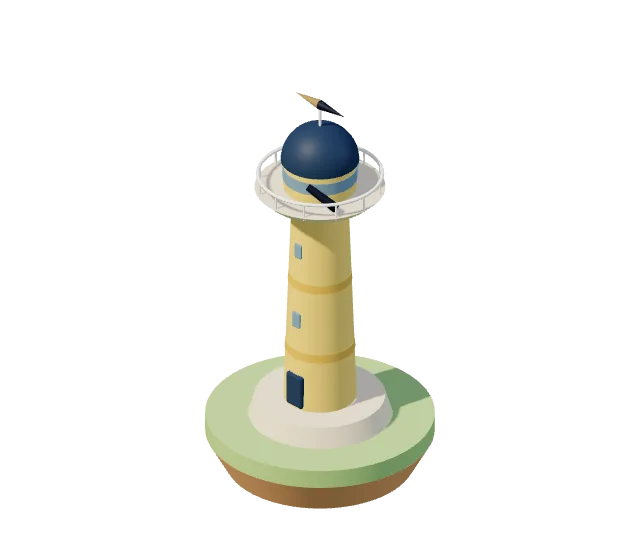
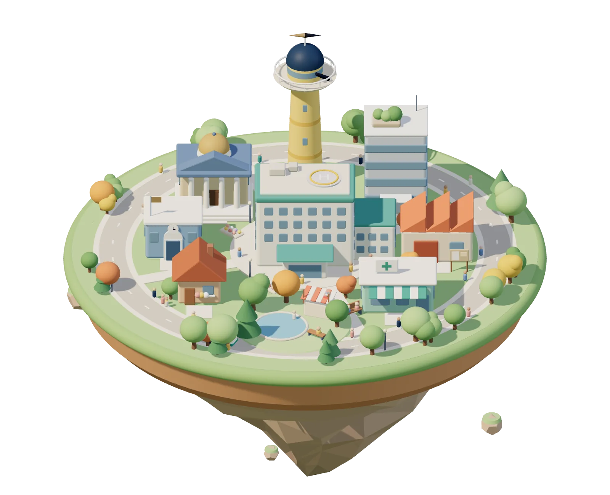
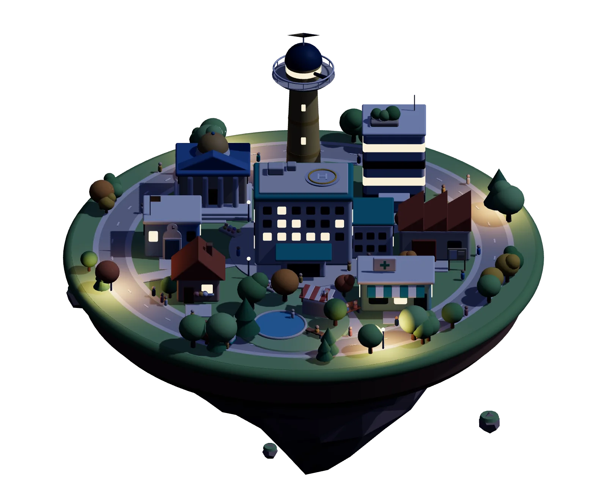
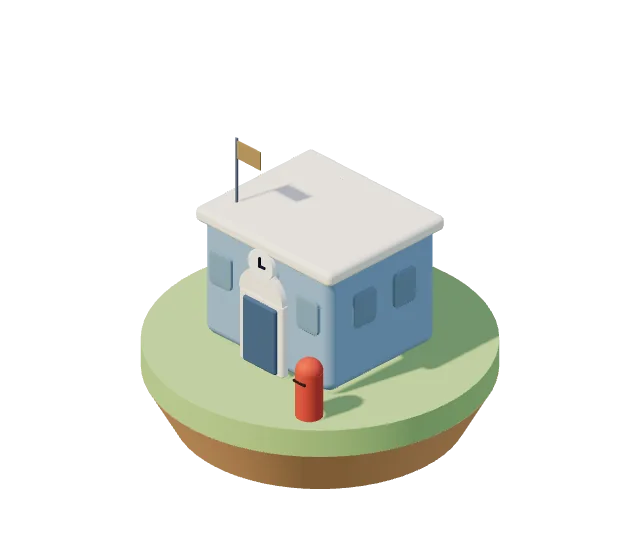
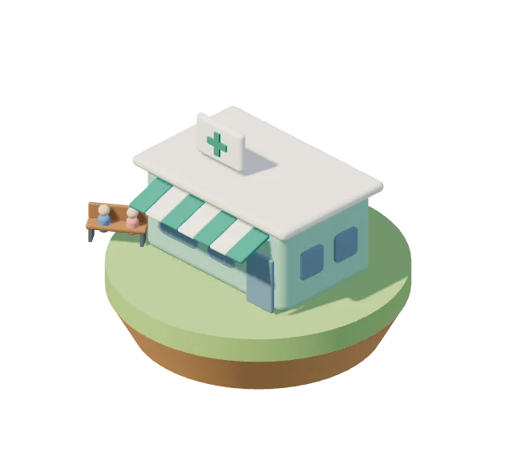
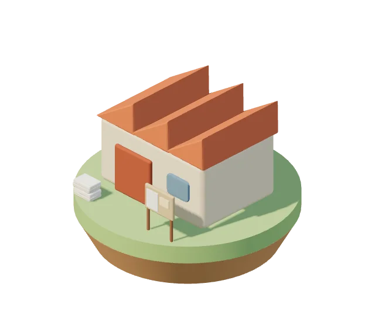
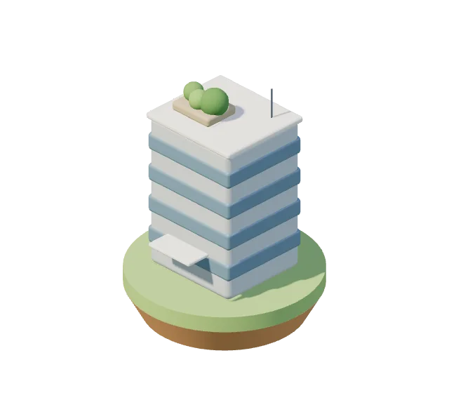
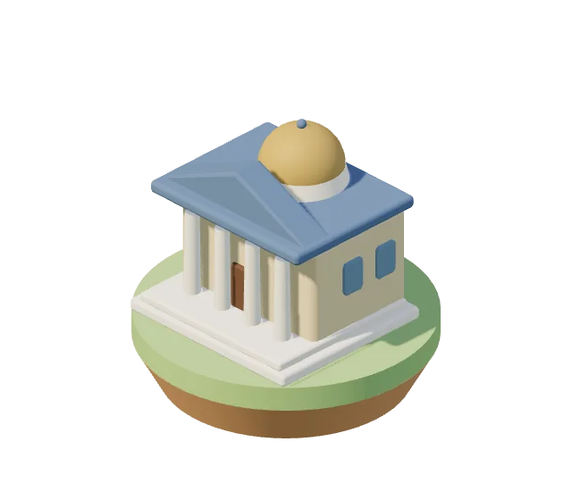
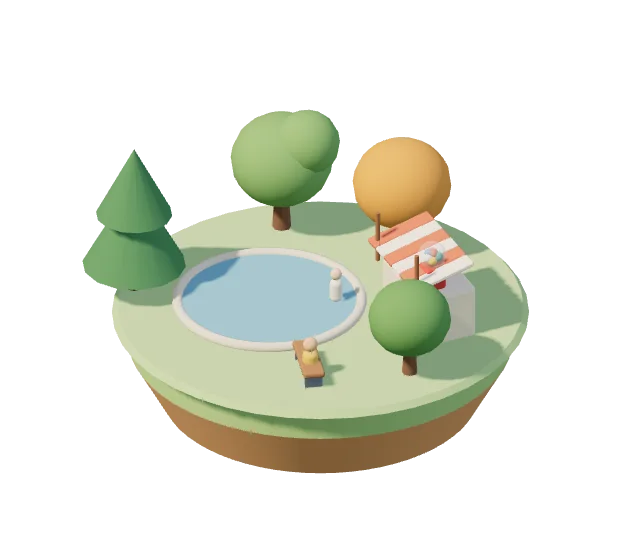
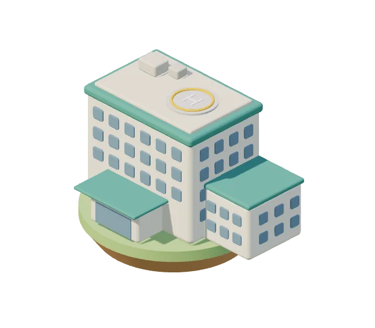

キャリアの地図
展望台
BRIDGE Compass — 10の質問で、これまでの経験を別の言葉に翻訳する
展望台にのぼる

建物を押すと、中が見られます
町の案内
ここに並べた道具のほとんどは、登録なしでブラウザから使えます。入力はその端末の中にだけ残ります。

キャリアの地図
BRIDGE Compass — 10の質問で、これまでの経験を別の言葉に翻訳する
展望台にのぼる
キャリア・経験を整理する
経験の棚卸し — 18の質問で、職務経歴書のたねをつくる
質問に答える
医療経営を学ぶ
クリニックタウン3D — クリニック経営を、1日ずつ動かして学ぶ
ゲームを始める
明日の業務を楽にする
掲示じたく — 院内掲示を、選んで埋めるだけ
掲示をつくる
経営・管理の実務に使う
RehaBoard — リハ部門の運営を、1画面に。ほかに外来・採用・面接・巡回の道具
紹介とデモを見る
学習を続ける
StudyBoard — 複数科目の学習を、1枚のボードで続ける
紹介を見る
気軽に試す・作品を楽しむ
ごきげん回復ガチャ — 疲れた日の回復行動を、ひとつだけ
ガチャを回す
いまの職場
窓あかり — 小さな病院の一日を、ただ眺める
眺める